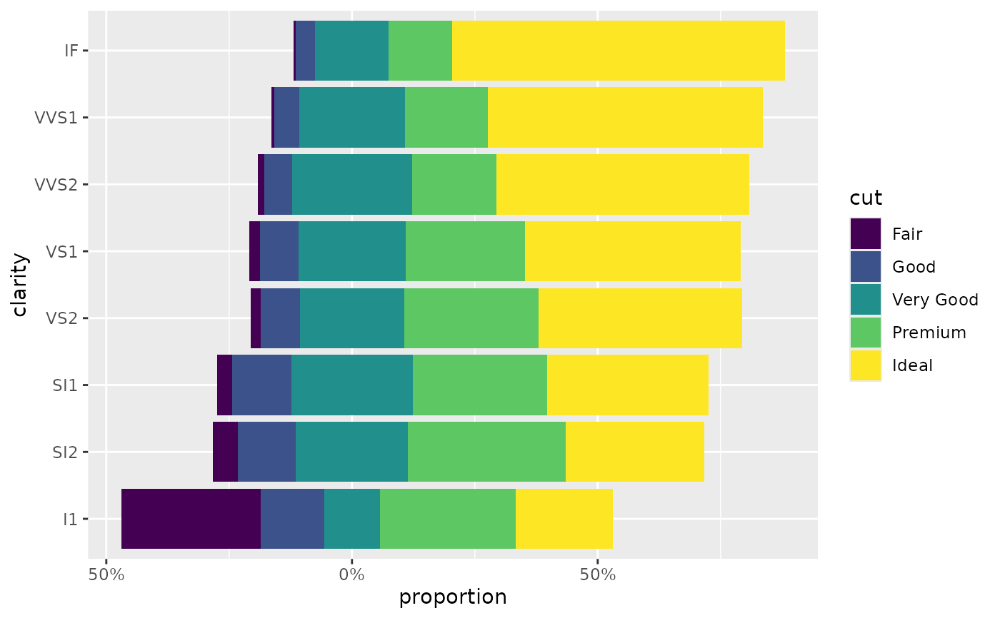
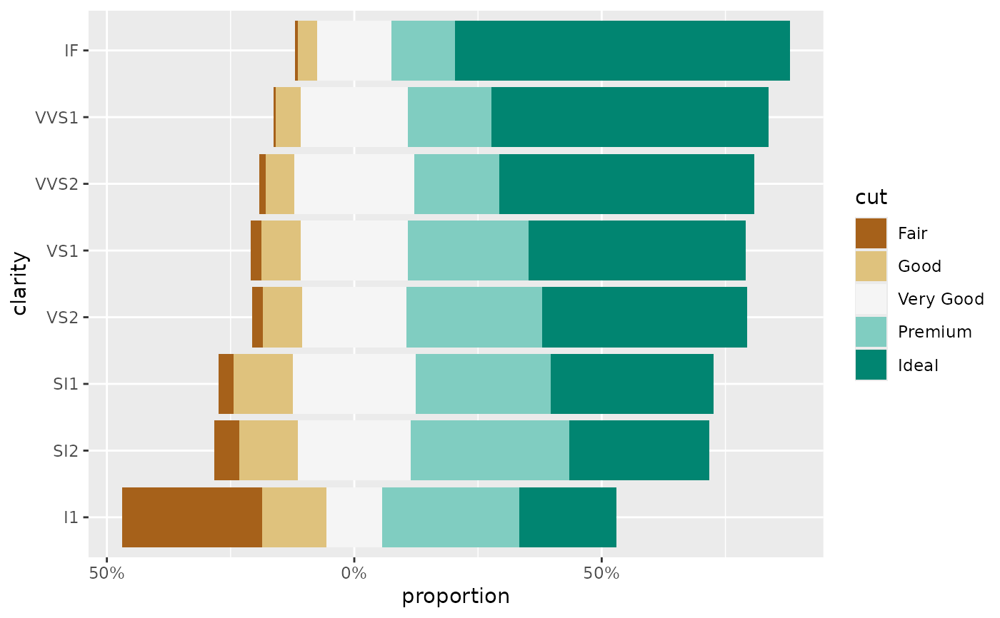
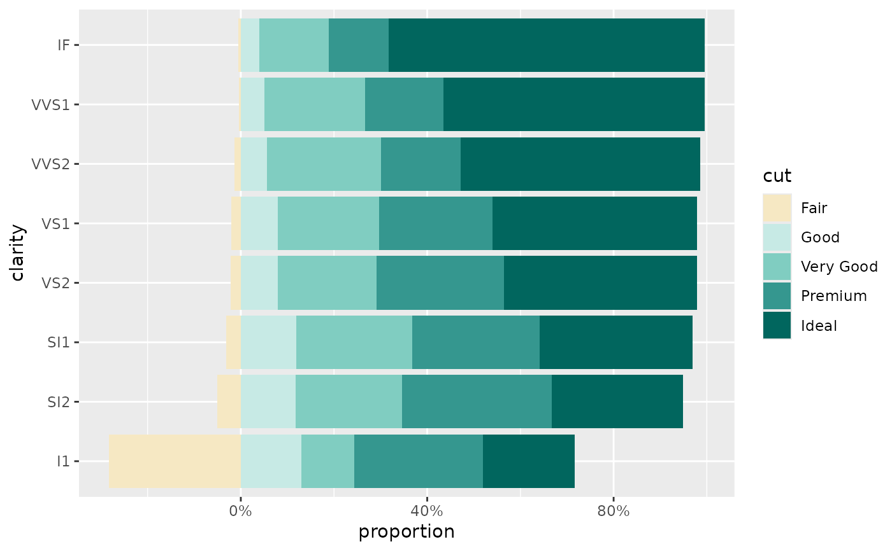

This scale is similar to other diverging discrete colour scales, but allows
to change the "center" of the scale using cutoff argument, as used by
position_likert().
Usage
scale_fill_likert(
name = waiver(),
...,
pal = scales::brewer_pal(palette = "BrBG"),
cutoff = NULL,
aesthetics = "fill"
)
likert_pal(pal = scales::brewer_pal(palette = "BrBG"), cutoff = NULL)Arguments
- name
The name of the scale. Used as the axis or legend title. If
waiver(), the default, the name of the scale is taken from the first mapping used for that aesthetic. IfNULL, the legend title will be omitted.- ...
Other arguments passed on to
discrete_scale()to control name, limits, breaks, labels and so forth.- pal
A palette function taking a number of colours as entry and returning a list of colours (see examples), ideally a diverging palette
- cutoff
Number of categories displayed negatively (see
position_likert()) and therefore changing the center of the colour scale (see examples).- aesthetics
Character string or vector of character strings listing the name(s) of the aesthetic(s) that this scale works with. This can be useful, for example, to apply colour settings to the colour and fill aesthetics at the same time, via
aesthetics = c("colour", "fill").
Examples
library(ggplot2)
ggplot(diamonds) +
aes(y = clarity, fill = cut) +
geom_bar(position = "likert") +
scale_x_continuous(label = label_percent_abs()) +
xlab("proportion")

ggplot(diamonds) +
aes(y = clarity, fill = cut) +
geom_bar(position = "likert") +
scale_x_continuous(label = label_percent_abs()) +
xlab("proportion") +
scale_fill_likert()

ggplot(diamonds) +
aes(y = clarity, fill = cut) +
geom_bar(position = position_likert(cutoff = 1)) +
scale_x_continuous(label = label_percent_abs()) +
xlab("proportion") +
scale_fill_likert(cutoff = 1)
